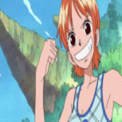
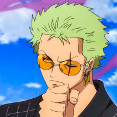

One Piece is a Japanese manga series written and illustrated by Eiichiro Oda. It has been serialized in Shueisha's shōnen manga magazine Weekly Shōnen Jump since July 1997, with its individual chapters compiled into 104 tankōbon volumes as of November 2022.
~ MEMBERS ~

"Cat Burglar" Nami is the navigator of the Straw Hat Pirates
"Black Leg" Sanji, born as Vinsmoke Sanji, is the cook of the Straw Hat Pirates
"God" Usopp is the sniper of the Straw Hat Pirates

Roronoa Zoro, also known as "Pirate Hunter" Zoro, is the combatant of the Straw Hat Pirates
I don't wanna conquer anything. It's just that the person with the most freedom on the sea is the pirate king. If you don't take risks, you can't create a future.
-One Piece
Call for action! Its time!
Sign up for more One Piece content by clicking on the button right over there!